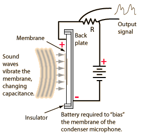
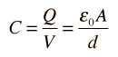
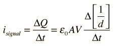

Condenser Microphone Signal
|

|
The flat, faithful frequency response of the condenser microphone arises from its mechanism. The charge on the membrane depends only upon the spacing and shows no appreciable resonances to skew the frequency response. |
The capacitance of the parallel plate membrane structure is given by

When the spacing changes, the charge changes, giving an electric current through the resistor R.

The voltage measured across the resistor is an electrical image of the sound pressure which moves the membrane.
Because the sensing element of a condenser microphone is a light membrane, it is capable of excellent transient response. The fact that the condenser has excellent high frequency response implies good transient response, since sharp transients have more high frequency content than the sustained sounds which follow them.
Because the condenser microphone must have a continuous, stable DC voltage to bias the membrane, it is common practice to supply that voltage from the sound mixing board. The voltage is applied via one of the microphone leads, typically 48 volts, and is commonly referred to as "phantom power". Since the alternative is a battery supplied bias, with the risk that a battery can go out in mid performance, the phantom power provision from mixing boards is useful.
|
Index
Sound reproduction concepts |